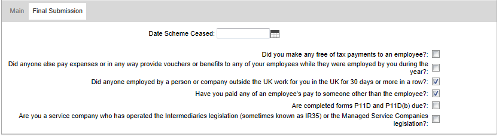

Final Submission for the Year
When you make the final submission for a tax year (or the final submission because a PAYE scheme has ceased), there are additional declarations you must make. This must be done from the global HMRC Workbench, because the declarations cover all employees, regardless of their pay frequency.
- If a submission that is marked as a final submission has been made, and you make a further submission in the same tax year on one of the frequency-specific workbenches, the "Final Submission" answers are shown on a separate tab.
- If you have submitted your final FPS (and where appropriate an EPS) for the tax year, but haven't indicated that this is your 'Final submission for the tax year', you must submit an EPS indicating that it is your 'Final submission for the tax year'. You must also complete the end-of year-declarations and questions.
To make an end of year declaration:
- Go to HMRC Workbench.
- Create the FPS (or EYU) record.
- the Final Submission for Year box. displays a Final Submission tab.

- If the PAYE scheme has ceased, enter the date the scheme ceased.
- Answer the declaration questions by ing the relevant boxes.
- Click
 to save the return record.
to save the return record.
- Submit the return as usual.